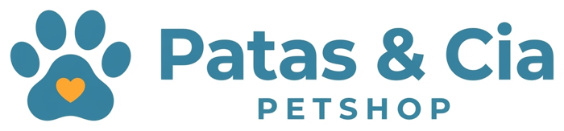
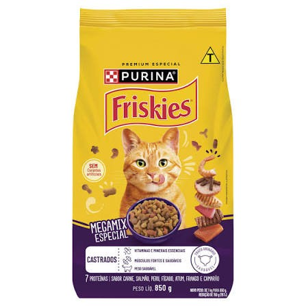
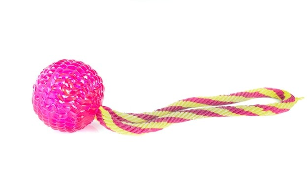
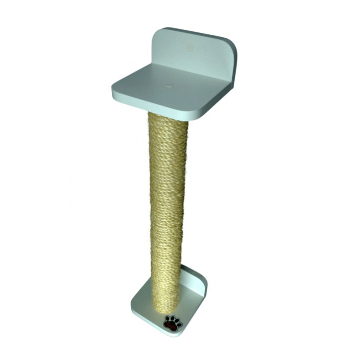
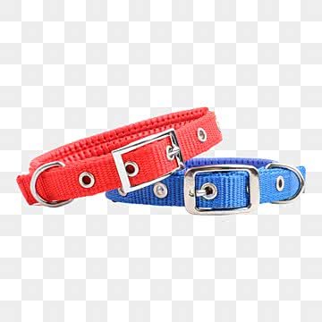
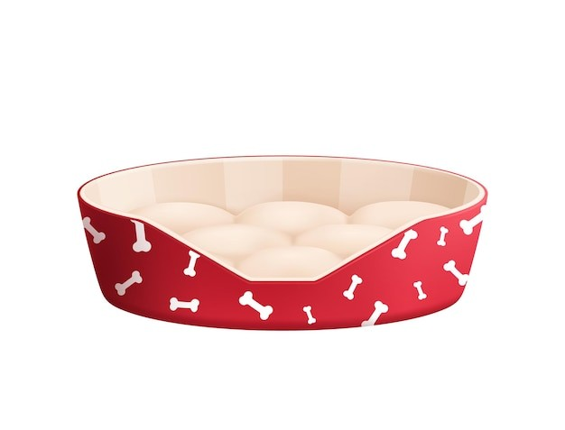

Ração Champ Filhotes Carne e Cereal 900 g
Ração seca completa e balanceada, sabor carne e cereal, para filhotes de 2 a 12 meses. Rica em vitaminas e minerais e sem corantes.
Valor: R$ 14,90

Tudo para o seu melhor amigo | Rua das Palmeiras, 123 - Centro | Tel.: (11) 3000-0000 | Seg a Sáb, 8h às 18h
Confira dois destaques de cada uma de nossas categorias.
Ração seca completa e balanceada, sabor carne e cereal, para filhotes de 2 a 12 meses. Rica em vitaminas e minerais e sem corantes.
Valor: R$ 14,90

Ração seca com 7 proteínas (carne, salmão, peru, fígado, atum, frango e camarão), indicada para gatos castrados, com vitaminas e minerais essenciais.
Valor: R$ 22,90

Bola de borracha resistente e atóxica, com corda para puxar e arremessar, ideal para brincadeiras e para ajudar na limpeza dos dentes dos cães.
Valor: R$ 24,90

Arranhador de parede revestido de sisal, com plataforma de descanso, ajuda a manter as unhas do gato saudáveis.
Valor: R$ 119,90

Conjunto de coleira em nylon ajustável e guia de 1,2 m, com fecho de segurança.
Valor: R$ 39,90

Caminha macia e lavável, com borda alta em formato oval, para cães e gatos de porte pequeno a médio.
Valor: R$ 89,90